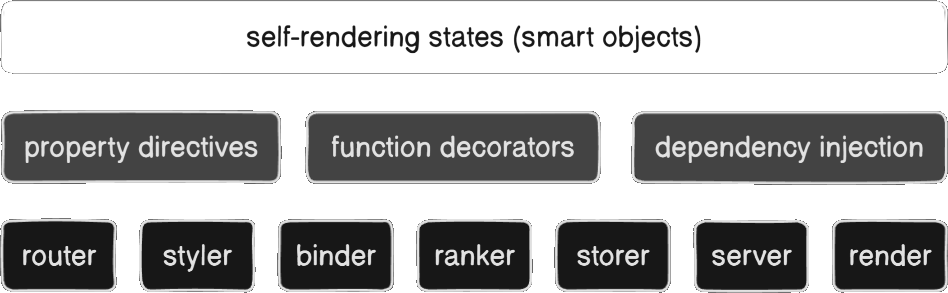

Comprehensive stateful React framework
Comparing Angular x React technologies
Challenges relateds to internal differences between React and Angular.
Some main comparable criteria between React and Angular.
Self-rendering state object
Intercept and transform the React client-side rendering with:
After prototype fase, arrives the new React framework that turns the Reactful library unfeasable, due the need to:
The framework developments deals with challenges related to next.js alternative, react.js constrains and javascript itself.
Smart object is the core framework feature, followed by function decorator, property directive and dual binding, and its React framework features.

Framework coding showcase
ranking | styling | routing | binding | serving
Easy search engine optmization (SEO) support with:
MetaTag and Open Graph types bound to functional component with @seo function decorator or basic override with title and description.
Reactful fixes scopeless isues using CSS in React.
Modular-scoped CSS imports by new Reactful CSS transpiler.
Advanced and comprehensive routing features with:
Simple static routing with no extra file name convention (next.js), supporting nesting route with relative url.
Dynamic route supported with no extra coupled naming convetion using function decorators and dependency injection.
@route('/profile/:id') export async function Profile(props, { params }) { return <h1>User id: { params.id }</h1> }
Framework built-in [data] and [bind] props directives, allowing two-way data binding code design within React one-way directional flow.
The [data] gets the object and [bind] mapps to its field, as controlled component approach with delayed render algorithm.
export const Hello = props => <> <h1> Hello { props.name || 'World' }!</h1> <input data={props} bind='name' /> </>
The form[data] gets the object and its inputs maps fields with [bind] for uncontrolled component with validation API support by DI.
export const Form = (props, { fails }) => <> <form data={props}> Name: <input bind='name' /> Mail: <input bind='mail'/> <button>Submit</button> </form> { fails.map(x => ... )} </>
Fetch binding enables pending states,
export const Form = (props, feeds) => <> { feeds.await & <progress>loading</progress> } <form data={props} onError={onValidate}> Name: <input bind='name' maxlength={50} /> Mail: <input bind='mail' validate={validateMe} /> <button>Submit</button> </form> <ul className='error-summary-block'> { feeds.fails.map(x => <li>{ x.message }</li>) } </ul> </> const validateMe = () => "Is invalidated if return something" const onValidate = x => x.errors.push({ error: 'new error' }) async function onPost(response: Response) { /* something... */ }
Comparing before x after